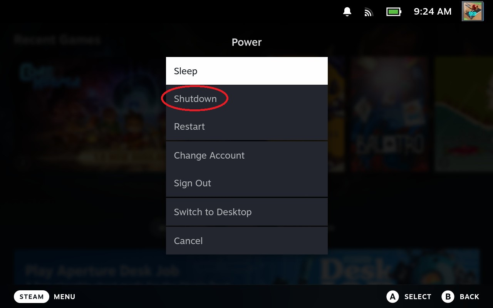
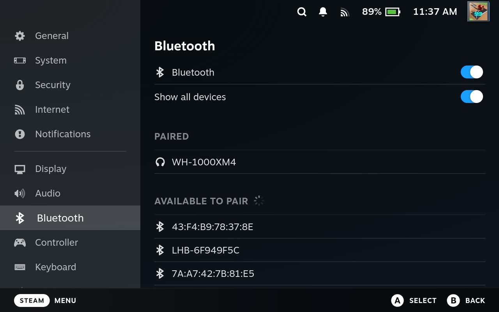

7. Troubleshooting
In this section, you will find solutions for commonly asked questions about the Steam Deck!
7.1 How do I update the Steam Deck?
To update the Steam Deck, you:
- Press the button.
- Select .
- Select .
- Select .
- If there are updates, select .
- Select to apply the update.
Figure 7.1: Update option within the Settings Menu
If there are no updates, it will say, "Up to date: last checked less than a minute ago" under "Software Updates."
Note:
If you see a symbol of a at the top of the screen, this means you have an update pending. Follow the steps outlined above to update your Steam Deck.
7.2 How do I turn off the Steam Deck?
Pressing the button puts the Steam Deck into .
To turn off the Steam Deck completely:
- Press the button.
- Select the option.
- Select .
This will allow your Steam Deck to shut down completely. It will not slowly lose power as it does in Sleep Mode, but it will take longer to turn on.
Figure 7.2: The option to shutdown the Steam Deck within the Power Menu.
7.3 How do I sign out of my Steam Account?
To sign out of your Steam Account on the Steam Deck, or to change whose Steam Account is logged in:
- Press the button.
- Select the option.
- Select to change whose Steam Account is logged in and to sign out of your account.
Figure 7.3: Change Account and Sign Out options within the Power Menu.
7.4 How do I pair Bluetooth headphones?
You can pair a set of Bluetooth headphones to the Steam Deck.
- First, make sure your Bluetooth headphones are in pairing mode.
- Press the button.
- Go to .
- Switch on the button next to (it should have a blue background).
- Switch on the button next to .
- Select the name of your device from the list below.
You should now see the name of your headphones under Paired within the Bluetooth menu.
Figure 7.4: The Bluetooth menu with successfully paired headphones.
7.5 Where can I find the Help Menu?
The on the Steam Deck is a useful place for any problems you may run into as you use the Steam Deck.
To get to the Help Menu:
- Press the button to access the Quick Access Menu.
- Scroll down until you get to the symbol.
From here, you can:
- Visit the Help Site which gives you options to search for specific help.
- View the entire Manual of the Steam Deck (warning: takes a long time to load!)
- Report a bug to Valve.
- Replay the start up Guided Tour of the Steam Deck, which goes over the basic functions of how the Steam Deck works. This is useful if you have forgotten or missed it the first time around!
Figure 7.5: The Help Menu.
Back to Table of Contents